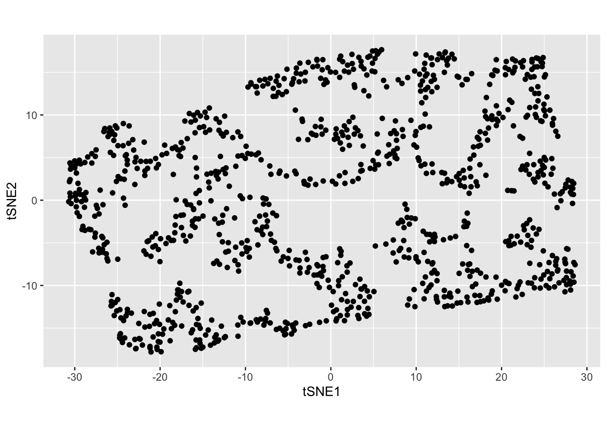

Is there any difference between dimension reductions in \(2-d\) and \(3-d\)?
tSNE
Generally, we reduce the dimensions to 2-d and see the visualization. But you also can try to reduce to \(3-d\) as well.
The main issue you would in mind is that can it preserve the same structure as in \(2-d\).
Let’s look an example…
random_num1 <- runif(1, min = 1, max = 10000000)
set.seed(random_num1)
u <- runif(1000, min = 10, max = 30)
v <- runif(1000, min = 10, max = 20)
x <- u + v - 10
y <- v - u + 8
z <- rep(0, 1000) + runif(1000, 0, 1)
w <- rep(0, 1000) - runif(1000, 0, 1)
df_2 <- tibble::tibble(x1 = x, x2 = y, x3 = z, x4 = w) N <- dim(df_2)[1]
opt_perplexity <- sqrt(N)
tSNE_fit <- df_2 %>%
select(where(is.numeric)) %>%
Rtsne(perplexity = opt_perplexity, pca = FALSE, pca_center = FALSE, normalize = FALSE, dims = 2)
tSNE_df <- tSNE_fit$Y %>%
as.data.frame() %>%
mutate(ID=row_number())
names(tSNE_df)[1:(ncol(tSNE_df)-1)] <- paste0(rep("tSNE",(ncol(tSNE_df)-1)), 1:(ncol(tSNE_df)-1))
tSNE_df_plot <- tSNE_df %>%
ggplot(aes(x = tSNE1,
y = tSNE2))+
geom_point() +
coord_equal()
tSNE_df_plot
tSNE_fit1 <- df_2 %>%
select(where(is.numeric)) %>%
Rtsne(perplexity = opt_perplexity, pca = FALSE, pca_center = FALSE, normalize = FALSE, dims = 3)
tSNE_df1 <- tSNE_fit1$Y %>%
as.data.frame() %>%
mutate(ID=row_number())
names(tSNE_df1)[1:(ncol(tSNE_df1)-1)] <- paste0(rep("tSNE",(ncol(tSNE_df1)-1)), 1:(ncol(tSNE_df1)-1))
langevitour(tSNE_df1 %>% select(-ID))